Articles
Electronic music genres, scenes and festivals.
Long guides to dance music genres and the clubs, raves and festivals behind them.
Every article
Best Trance Tracks of All Time: 12 Records to Hear
Twelve trance records from 1993 to 2012 with release years, UK chart peaks and a player for each, from Café del Mar to Concrete Angel.
Read article →Why the DJ Mag Top 100 Barely Changes
Five DJs in the top ten of every poll since 2015: the table, how the vote works, what campaigning is allowed and who the poll misses.
Read article →Best Techno Tracks: Nine Records That Built the Sound
Nine techno records grouped by scene with a player each, from No UFO's in 1985 to Doppler in 2021.
Read article →Belgrade Clubs and Nightlife: Drugstore, Klub 20/44, Splavovi
Drugstore, Klub 20/44 and Barutana: the Belgrade clubs worth a night, how the splavovi river rafts were cleared from the Sava, and Boiler Room sets to hear first.
Read article →Best Clubs in Vienna: Flex, Grelle Forelle and Where to Dance Now
The best clubs in Vienna now: Flex, Grelle Forelle, Das Werk, Fluc and SASS, plus what happened to Pratersauna, which stopped operating as a club in 2025.
Read article →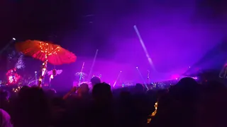
Festivals~11 min readFusion Festival, Lärz Germany: 2027, 2028 Dates, Tickets
Fusion Festival in Lärz, Germany: why there is no 2027 edition, the 2028 dates, how the ticket lottery works, the 2019 police dispute, stages and how to get there.
Read article →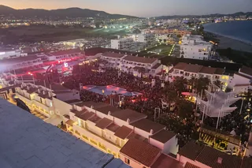
Rave spots~9 min readUshuaia Ibiza: Tickets, Dress Code and Season Events
Ushuaia Ibiza: what tickets cost, the dress code and entry rules, the 2026 residencies and closing parties, and what 2027 has not published.
Read article →Love Parade: History, Duisburg 2010 and Rave the Planet
The Love Parade from Berlin in 1989 to Duisburg in 2010, why it ended, and Rave the Planet and the Street Parade, the parades that carry it on.
Read article →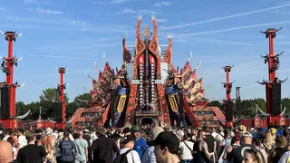
Festivals~8 min readDefqon.1 2027: Dates, Tickets, Sale Dates, Line-up
Defqon.1 2027: dates, how the ticket sales work, why 2026 was cancelled, where it is held, the stage colours and how to get there.
Read article →Printworks London: Reopening, Closure and History
Printworks London closed in May 2023. What is officially planned, why it shut, its rooms and capacity, famous nights, Drumsheds and where to go instead.
Read article →Best DJ Sets of All Time: 30 You Can Hear
Thirty official recordings, from Carl Cox at Space to Fabio and Grooverider, with named sets, substitutes and editorial picks clearly marked.
Read article →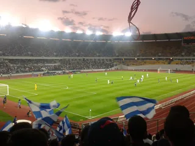
Rave spots~6 min readTbilisi Clubs: Bassiani, Khidi and Mtkvarze Guide
Tbilisi clubs and nightlife: Bassiani, KHIDI, Mtkvarze and Left Bank, how the 2018 raid and the 2024 strike shaped the scene, and the sets to hear.
Read article →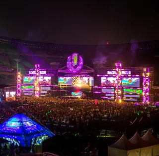
Festivals~10 min readBest Electronic Music Festivals in Asia: 2027 Guide
Ultra Japan, Wonderfruit, S2O, Sunburn, DWP and more: where they are, what they play and which 2027 dates are confirmed.
Read article →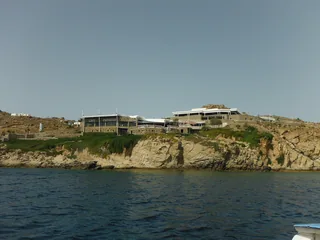
Rave spots~14 min readBest Clubs in Europe: 23 Nightclubs Worth the Trip
The best clubs in Europe by country, from Berghain and fabric to Pacha, with sets to hear from several rooms.
Read article →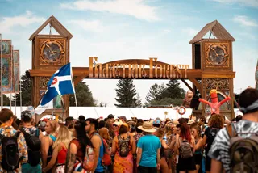
Festivals~9 min readElectric Forest 2027: Tickets, Dates, Camping, Line-up
Electric Forest 2027: when it is held in Rothbury, Michigan, how tickets and camping work, how to get there and what to pack.
Read article →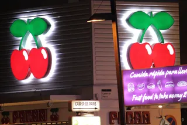
Rave spots~9 min readPacha Ibiza: Tickets, Dress Code and Calendar 2026
Pacha Ibiza: how tickets, tables and the dress code work, where the club is, who owns it and how to read the 2026 calendar.
Read article →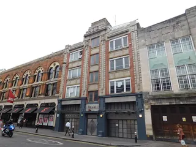
Rave spots~10 min readfabric London: History, Rooms, Tickets and Dress Code
fabric London in Farringdon: the three rooms, opening times, tickets, dress code, capacity, age limit and what happened in the 2016 closure.
Read article → Rave spots~10 min read
Rave spots~10 min readBerghain: Panorama Bar, Sound and Residents
Berghain explained: the former power station, Panorama Bar upstairs, Halle am Berghain, the Kantine, and the Ostgut Ton label.
Read article →Time Warp Festival 2027: Mannheim, Tickets, Line-up
Time Warp 2027: when the Mannheim original runs, which cities host an edition, how tickets work and who plays.
Read article →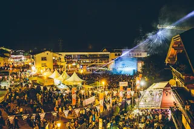
Festivals~6 min readSnowbombing 2027: Dates, Tickets, Mayrhofen
Snowbombing 2027 runs 5 to 10 April in Mayrhofen, Austria. Dates, how packages and tickets work, where it is held and who plays.
Read article →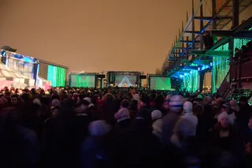
Festivals~8 min readBest Winter Music Festivals 2027: Snowbombing, Igloofest, CTM
Winter music festivals in 2027, from Tomorrowland Winter and Snowbombing to CTM, Elevate and Shapes, with dates marked confirmed or unconfirmed.
Read article →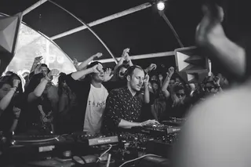
Festivals~7 min readDekmantel Festival 2027: Dates, Tickets, Selectors, Amsterdam
Dekmantel at the Amsterdamse Bos, 18+: 2027 dates (listed, not yet official), ticket rules, Selectors in Croatia on 19 to 23 August 2027 and sets to hear.
Read article →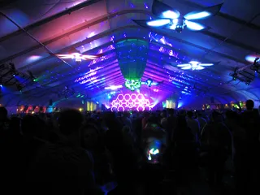
Festivals~10 min readBest EDM Festivals in the US 2027: EDC, Ultra, Movement
EDC Dusk and Dawn on 14–16 and 21–23 May, Ultra on 26–28 March, Movement on 29–31 May: US EDM festivals for 2027 by sound, with dates confirmed or not.
Read article →EXIT Festival: History, Petrovaradin Fortress and What Comes Next
From a Novi Sad student movement and the Dance Arena at Petrovaradin Fortress to the post-2025 global tour.
Read article → Festivals~7 min read
Festivals~7 min readAirbeat One Festival 2027: Dates, Stages, Camping and Travel
An airfield festival for EDM, techno, hardstyle and psytrance, with camping operating as part of the event.
Read article → Festivals~7 min read
Festivals~7 min readARC Music Festival 2027: Chicago Guide, Stages and Travel
Chicago house history, international techno, the compact Union Park site and the city-wide After Dark programme.
Read article → Festivals~7 min read
Festivals~7 min readMonegros Desert Festival 2027: Date, History and Guide
One long electronic event on exposed land near Fraga, with roots in Florida 135 and stages running through the night.
Read article → Festivals~7 min read
Festivals~7 min readBoomtown Festival 2027: Dates, Location, History and Music
A five-day camping festival built as a fictional city, with soundsystem culture, electronic music, live bands and street theatre.
Read article → Festivals~7 min read
Festivals~7 min readSziget Festival 2027: Dates, Music, Camping and Travel
Five days on Óbuda Island, with pop, rock and hip-hop beside club stages, theatre, circus and a rail link into Budapest.
Read article →Movement Detroit: Festival History, Location and Techno Legacy
From the free Detroit Electronic Music Festival in 2000 to six stages at Hart Plaza over Memorial Day weekend.
Read article → Music history~8 min read
Music history~8 min readWhat Is Hardstyle? History, Sound, Artists and Subgenres
Reverse bass, distorted pitched kicks, the Dutch festival circuit and the split between euphoric and raw hardstyle.
Read article →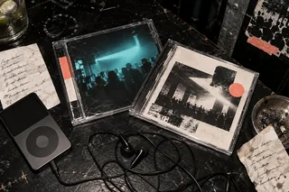
Digging~7 min readBest House Music Playlists on Spotify: 12 Curated Picks
Ten focused house playlists plus two disclosed thecatrave selections spanning house, techno and the spaces between them.
Read article →Best Techno Mixes: 10 Essential DJ Sets
Ten complete techno recordings, from Juan Atkins, Robert Hood and Jeff Mills to Wata Igarashi and Fadi Mohem.
Read article →Best SoundCloud DJ Mixes, Plus One Personal Pick
Eight editorial selections with a clear point of view, plus one clearly disclosed thecatrave mix worth your time.
Read article →What Is Trance Music? Origins, Artists and Sound
A build, a breakdown and a drop, born in Frankfurt's clubs. Who built it, how Armin van Buuren and Tiësto took it to festival mainstages, and how psytrance split off.
Read article →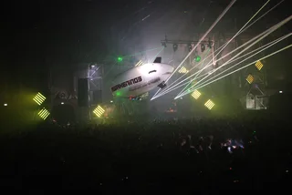
Festivals~6 min readAwakenings Festival: What It Is and Where It Happens
Founded in Amsterdam in 1997, techno-only ever since: where Awakenings' summer festival and its Amsterdam Dance Event special happen, and why it's called Awakenings.
Read article →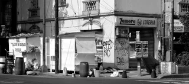
Rave spots~6 min readBest Clubs in Mexico City: Patrick Miller, M.N.Roy and Fünk
Patrick Miller has run every Friday since 1983, M.N.Roy occupies a former Communist Party mansion, and Fünk opened in 2019: the best clubs in Mexico City now.
Read article →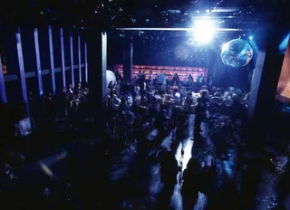
Rave spots~7 min readBest Clubs in Lisbon: Lux Frágil, Ministerium and Kremlin
Lux Frágil has anchored Lisbon since 1998, Ministerium runs Afro-house from a former ministry, and Musicbox closed in 2025: the best clubs in Lisbon now.
Read article →Best Clubs in Bristol: Motion, Lakota and Thekla
Motion lost its lease in 2025 and moved, Lakota has run drum and bass since the 1990s, and a 1959 cargo ship still hosts club nights: the best clubs in Bristol.
Read article →Best Clubs in Manchester: From the Haçienda to the Warehouse Project
The Haçienda closed in 1997, but its warehouse-first DIY streak still shapes the city: the best clubs in Manchester now, and the Warehouse Project's rise since.
Read article →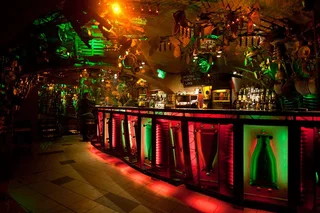
Rave spots~6 min readBest Clubs in Prague: Cross Club, Karlovy Lázně and Ankali
Cross Club's salvaged machinery, Karlovy Lázně's five floors and Ankali's techno nights: the best clubs in Prague, mainstream and underground.
Read article → Rave spots~6 min read
Rave spots~6 min readBest Clubs in Budapest: A38, Instant-Fogas and Turbina
A38's converted cargo ship, the seven rooms of Instant-Fogas and Turbina's techno nights: the best clubs in Budapest now, and the ruin bars several grew out of.
Read article → Rave spots~7 min read
Rave spots~7 min readBest Clubs in Tokyo: WOMB, Contact and the Ban on Dancing
WOMB, Contact, Vent and Circus Tokyo: the best clubs in Tokyo for house, techno and bass music, and the 68-year law against dancing that shaped them.
Read article → Rave spots~11 min read
Rave spots~11 min readBest Clubs in NYC: Nightclubs for House and Techno, Then and Now
Nowadays, Basement, Public Records, Good Room and Elsewhere: the best clubs in NYC for house and techno now, and the history from the Loft to Output.
Read article →What Is Techno? Detroit, the Belleville Three and Techno Today
Juan Atkins, Derrick May and Kevin Saunderson: what techno is, why it is called techno, Underground Resistance, Berlin and the styles from minimal to hard techno.
Read article →What Is House Music? History, Sound and Chicago Origins
Frankie Knuckles, the Warehouse and the first Chicago records: what house music is, why it is called house, and the styles from deep house to afro house.
Read article →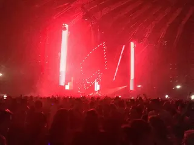
Festivals~7 min readBest New Year's Eve Festivals 2026 into 2027
Countdown NYE, Decadence, HiJinx, Rhythm and Vines and Awakenings: the best New Year's Eve festivals for dance music in 2026, with dates and where they are.
Read article →Best Clubbing Cities in Europe: Where to Go Out
Berlin, Amsterdam, London, Ibiza, Tbilisi and seven more: the best clubbing cities in Europe, ranked by their clubs rather than bars and beaches.
Read article →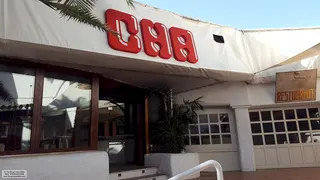
Rave spots~6 min readBest Clubs in Ibiza: Pacha, Amnesia, Hï and the Rest
Hï, Pacha, Amnesia, DC-10, Ushuaïa and [UNVRS]: the best clubs in Ibiza now, the ones that closed, where to stay and when the season runs.
Read article →Best Clubs in Amsterdam: From RoXY to Radion
Shelter, Radion, Lofi and the Gashouder: the best clubs in Amsterdam open now, why they run 24 hours, and the history from RoXY to De School.
Read article →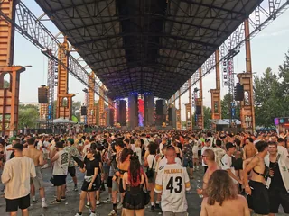
Festivals~13 min readBest Electronic Music Festivals in Europe 2027, Compared
Fourteen major festivals and seven smaller ones, from Tomorrowland to Garbicz, compared by sound, scale, setting and 2027 dates.
Read article →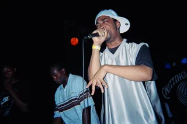
Music history~13 min readWhat Is Grime Music? Its Sound, History, Artists and Tracks
Cold 140 BPM instrumentals, pirate radio, crews and clashes from East London, and the arguments about who started it.
Read article →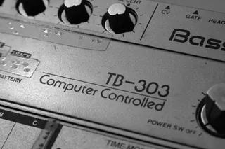
Music history~14 min readWhat Is Acid House? From Chicago's TB-303 to the UK Rave Boom
A $40 bass machine, three friends in Chicago, a DJ who played their tape four times in a night, and the British movement that borrowed the name.
Read article →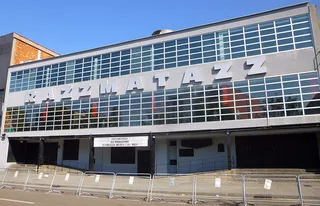
Rave spots~6 min readBest Clubs in Barcelona: From Zeleste to Razzmatazz
Razzmatazz, Nitsa and Macarena Club: how Barcelona's biggest club grew out of a 1970s live venue, and the best clubs in Barcelona open now.
Read article → Rave spots~6 min read
Rave spots~6 min readBest Clubs in Paris: From Le Palace to Rex Club
Le Palace, Les Bains Douches and Rex Club: the clubs that made Paris nightlife, how each became famous, and the best clubs in Paris open now.
Read article →Best Spotify Playlists: 12 Human-Curated Picks
Twelve playlists with an identifiable point of view, from KEXP and Pitchfork to Four Tet, Bicep and the electronic underground.
Read article →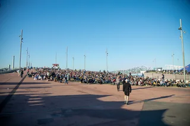
Festivals~9 min readPrimavera Sound Barcelona 2027: Location, Headliners by Year
The Barcelona festival returns to Parc del Fòrum on 3 to 5 June 2027: its waterfront location, scale, music and city programme.
Read article → Music history~11 min read
Music history~11 min readGerman Electronic Music History: From Kraftwerk to Techno
Cologne studios, Düsseldorf electronic pop, Frankfurt trance and the Detroit-Berlin alliance.
Read article →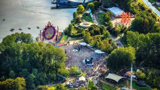
Festivals~9 min readMysteryland Festival: Where It Is, Its History, and 2027
The oldest dance festival in the Netherlands by its own count, on the old Floriade grounds in Haarlemmermeer: when Mysteryland 2027 is, why it skipped 2026, who owns it, and what it plays.
Read article →Sónar Festival Barcelona: History, Music and 2027 Dates
Three days every June in Barcelona since 1994: where Sónar happens, how a festival of advanced music grew to 150,000 people, who owns it now, OFFSónar, and Sónar 2027.
Read article →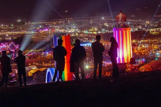
Festivals~10 min readGlastonbury Festival: 2027, Fallow Years and Headliners
Five days most Junes at Worthy Farm in Somerset: when Glastonbury 2027 is, why there was no festival this year, where it is, how big it is, and every headliner by year.
Read article →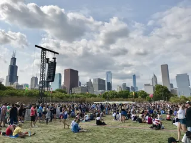
Festivals~9 min readLollapalooza Chicago: Location, History and the Music
Four days every summer in Grant Park, Chicago: where Lollapalooza happens, how it grew from a farewell tour and what plays across its stages.
Read article →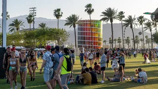
Festivals~10 min readWhat Is Coachella? 2027 Dates, Location and Music
Two weekends every April at the Empire Polo Club in Indio: when Coachella 2027 is, how long it lasts, how a festival that lost money in 1999 grew, and what plays in the Sahara.
Read article →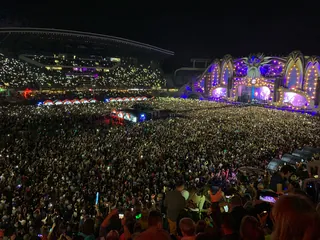
Festivals~10 min readUntold Festival: Where It Is, How Big, and the Music
Four days every August in Cluj-Napoca: when Untold 2027 is, where it happens, how a European Youth Capital party reached 500,000 admissions, and what plays past the main stage.
Read article →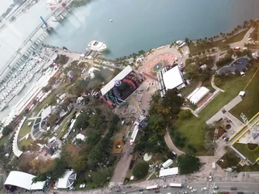
Festivals~14 min readUltra Music Festival 2027: Location, Age Limit, Attendance
Ultra returns to Bayfront Park in Miami on 26 to 28 March 2027: the location, scale, history and music beyond the Main Stage.
Read article →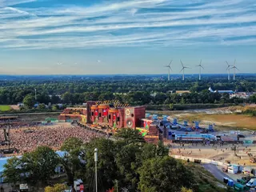
Festivals~10 min readParookaville Festival: Where It Is, Who Runs It, the Music
A festival staged as a city on an old RAF airbase at Weeze: where Parookaville happens, how three friends built it, how many people go, who runs it, and what plays there.
Read article →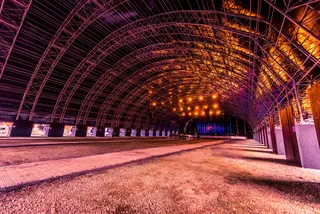
Festivals~10 min readCreamfields Festival 2027: Location, Capacity, Age Limit
Four days on the Daresbury estate every August bank holiday: where Creamfields happens, how a Liverpool house night grew into it, who owns it, and what plays beyond the Arc Stage.
Read article →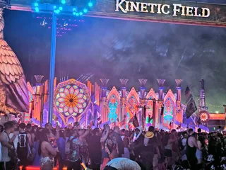
Festivals~11 min readEDC Las Vegas: What It Is, How Big, and the Music
Electric Daisy Carnival at the Las Vegas Motor Speedway: where EDC happens, how half a million people a year grew out of a field in Chino, and what plays past kineticFIELD.
Read article →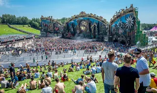
Festivals~9 min readTomorrowland Festival: Where It Is, How Big, and the Music
A park in Boom, Belgium, that most of the world knows through a livestream: where Tomorrowland happens, how big it is, who owns it, and what plays off the Mainstage.
Read article →Where to Watch Live DJ Sets: Boiler Room, HÖR, NTS and More
Where to watch DJ sets online, how the main platforms differ, and a route through 67,005 archived recordings.
Read article →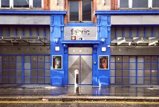
Rave spots~12 min readBest Electronic Music Clubs in London: History and Where to Go
The best electronic music clubs in London now, plus the rooms that shaped acid house, jungle, garage and dubstep.
Read article → Rave spots~10 min read
Rave spots~10 min readBest Clubs in Berlin: The Legends and the Ones Still Open
The rooms that made Berlin a techno city, the famous clubs that closed, and the best clubs in Berlin that are still open.
Read article →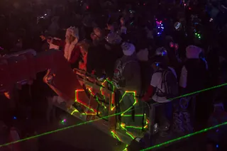
Festivals~13 min readWhat Is Burning Man? The Event, the City and the Music
A participant-built city in the Nevada desert, with no central lineup or main stage, and the sound camps and art cars that programme their own music.
Read article →Best Boiler Room Sets of All Time, Ranked and Measured
Eighteen sets picked for what happens in them, beside the ten most-watched, counted across 8,206 Boiler Room recordings.
Read article →What Is UK Garage? The Sound, 2-Step, Speed Garage and Bassline
London played an American record too fast until the beat broke. The branches it split into, and the numbers behind its revival.
Read article →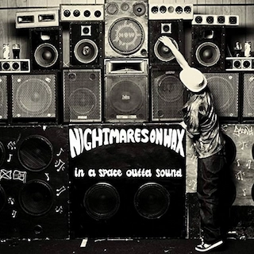
Digging~10 min readHow to Find New Music: 10 Ways That Are Not an Algorithm
Ten ways to hear something you have not heard before, from community radio to record credits, ordered by how much work they take.
Read article →What Is Drum and Bass? 174 BPM, History and Subgenres
Fast breakbeats, deep sub-bass and the British rave continuum behind a global genre usually played between 170 and 180 BPM.
Read article →What Is Dubstep? Origins, Sound and the Genre Split
From south London record shops and 200-capacity basements to a genre that split into two sounds sharing one name.
Read article →What Is Bass Music? History, Genres and Essential Tracks
A global history connecting Jamaica, Miami, Britain, Los Angeles, Chicago, Durban and today’s hybrid club culture.
Read article →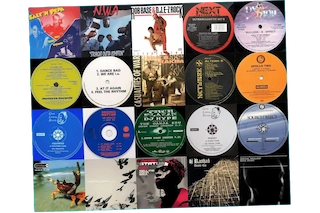
Music history~22 min readBreakbeat Music: History, Sound and Evolution
From funk breaks and pirate radio to cracked VSTs and modern bass hybrids.
Read article →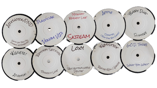
Music history~18 min readJungle Music: From Roots to Revival
Pirate radio, dubplates, MC energy and the global return of a distinctly Black British sound.
Read article →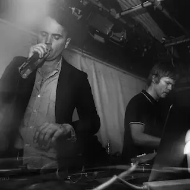
Music history~27 min readThe Evolution of UK Electronic Music
Ten sounds that travelled from regional underground scenes into global culture.
Read article →